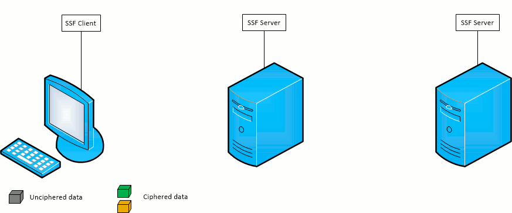
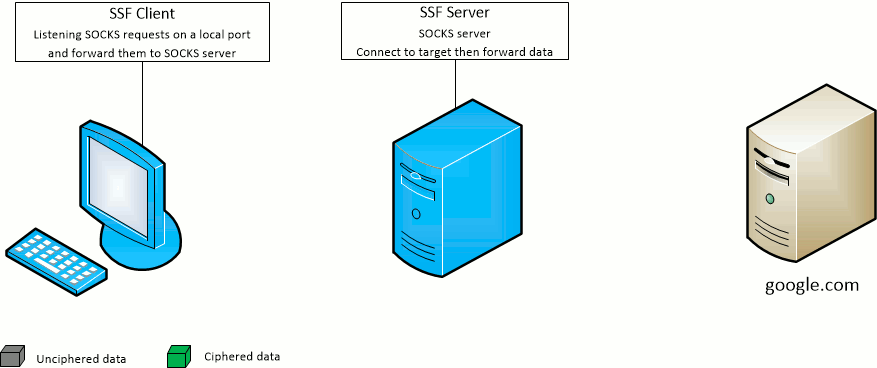
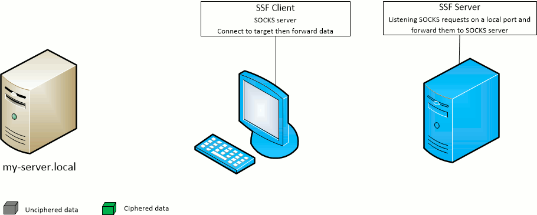
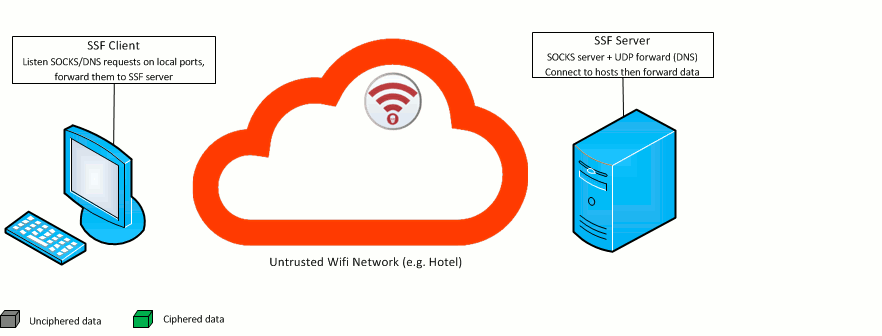

Secure Socket Funneling (SSF) is a network tool and toolkit.
It provides simple and efficient ways to forward data from multiple sockets (TCP or UDP)
through a single secure TLS link to a remote computer.
The initial aim of SSF was to provide an easy way for users and developers to multiplex and demultiplex various network data flows. It was designed to:
These requirements excluded SSH which showed limitations on all items (particularly in performance, but also by the lack of server side application on Windows). Classic VPN software was also excluded because the requirement of administrator rights was too limiting.
One feature which was not present in any another equivalent network tool was UDP forwarding. UDP is nonetheless widely used in real-time services (VoIP, online gaming, ...) and for DNS. Therefore, SSF is able to forward both TCP and UDP from the client to the server (options -L and -U) as well as from the server to the client (options -R and -V)
SSF also allows dynamic port forwarding with a SOCKS server from the client to the server (option -D just like SSH) and from the server to the client (option -F which SSH does not allow)
Basic shell support on Windows (cmd or Powershell), Linux and OS X. This feature must be activated on client or server prior to use. This is the first draft and we plan to improve it over time. Feel free to contribute!
The bouncing feature simply allows to forward the traffic from one point to another, through a list of intermediary relay servers
SSF command-line was designed as a drop-in replacement for SSH (on equivalent features, such as port forwarding or SOCKS), so that you can benefit of the performance and security gain with minimal - or even, not a single - update for your scripts and tools.
SSF provides a simple way to route an SSF connection between a client and a server through a list of SSF relay servers without protocol or cryptographic overhead. At this point, the traffic is decrypted as it is received by a relay and re-encrypted to be sent to the next relay or final destination. This means that the data will be encrypted between each relay but will transit unencrypted on the relay itself. It is therefore essential that the relay servers be secure and controlled by the owner of the data.
If users were to express the need, future versions could add a second cryptographic layer between the client and the destination server so that the data remained encrypted by this layer on every relay.
With default options, the following files and folders should be in the directory of execution of a client or a server (see the Security features section if you do not know how to generate them):
Where :
Moreover, a client will be able to connect to a server if two conditions are fulfilled:
In order to customize the paths and file names, the command line accepts a configuration file option -c.
An example is given below.
The configuration file is JSON format file in which several options can be specified. At this point, only security options relative to TLS use can be customized. See below an example of configuration file. For more information about TLS and SSF security see the Security features section.
{
"ssf": {
"tls" : {
"ca_cert_path": "./certs/trusted/ca.crt",
"cert_path": "./certs/certificate.crt",
"key_path": "./certs/private.key",
"key_password": "",
"dh_path": "./certs/dh4096.pem",
"cipher_alg": "DHE-RSA-AES256-GCM-SHA384"
},
"http_proxy" : {
"host": "",
"port": "",
"credentials": {
"username": "",
"password": "",
"domain": "",
"reuse_ntlm": "true",
"reuse_nego": "true"
}
},
"services": {
"datagram_forwarder": { "enable": true },
"datagram_listener": {
"enable": true,
"gateway_ports": false
},
"stream_forwarder": { "enable": true },
"stream_listener": {
"enable": true,
"gateway_ports": false
},
"file_copy": { "enable": false },
"shell": {
"enable": false,
"path": "/bin/bash|C:\\windows\\system32\\cmd.exe",
"args": ""
},
"socks": { "enable": true }
}
}
}
For an SSF server, if the private key is encrypted but
no password was provided with the configuration file,
all connections will fail.
However, for an SSF client, a password prompt will be
presented to the user. It will give him the opportunity to enter
the password, if needed.
SSF is using microservices to build its features (TCP forwarding, remote SOCKS, ...) There are 7 microservices:
| ssfc feature | microservice client side | microservice server side |
|---|---|---|
-L: TCP forwarding |
stream_listener | stream_forwarder |
-R: remote TCP forwarding |
stream_forwarder | stream_listener |
-U: UDP forwarding |
datagram_listener | datagram_forwarder |
-V: remote UDP forwarding |
datagram_forwarder | datagram_listener |
-D: SOCKS |
stream_listener | socks |
-F: remote SOCKS |
socks | stream_listener |
-X: shell |
stream_listener | shell |
-Y: remote shell |
shell | stream_listener |
This architecture makes it easier to build remote features: they use the same microservices but on the opposite side.
ssfc and ssfs come with pre-enabled microservices.
Here is the default microservices configuration:
"ssf": {
"services": {
"datagram_forwarder": { "enable": true },
"datagram_listener": { "enable": true },
"stream_forwarder": { "enable": true },
"stream_listener": { "enable": true },
"socks": { "enable": true },
"file_copy": { "enable": false },
"shell": { "enable": false }
}
}
To enable or disable a microservice, set its enable option to true or false.
Trying to use a feature requiring a disabled microservice will result in an error message.
ssfc[.exe] [options] host
Basic options:
-h [ --help ] Produce help message
-v [ --verbosity ] level (=info) Verbosity:
critical|error|warning|info|debug|trace
-q [ --quiet ] Do not display log
Local options:
-c [ --config ] config_file_path Set config file. If option empty, try to load 'config.json' file from working
directory
-b [ --circuit ] circuit_file_path Set circuit file. If option empty, try to load 'circuit.txt' file from working
directory
-p [ --port ] port (=8011) Set remote SSF server port
-g [ --gateway-ports ] Allow gateway ports. At connection, client will be allowed to specify
listening network interface on every services
-S [ --status ] Display microservices status (on/off)
Supported service commands:
-Y [ --remote-shell ] [[rem_ip]:]rem_port
Open a port server side, each connection to that port launches a
shell client side with I/O forwarded from/to the socket (shell microservice
must be enabled client side prior to use)
-F [ --remote-socks ] [[rem_ip]:]rem_port
Run a SOCKS proxy on localhost accessible from server [[rem_ip]:]rem_port
-X [ --shell ] [[loc_ip]:]loc_port
Open a port on the client side, each connection to that port launches a
shell server side with I/O forwarded to/from the socket (shell microservice
must be enabled server side prior to use)
-D [ --socks ] [[loc_ip]:]loc_port
Run a SOCKS proxy on remote host accessible from client [[loc_ip]:]loc_port
-L [ --tcp-forward ] [[loc_ip]:]loc_port:dest_ip:dest_port
Forward TCP client [[loc_ip]:]loc_port to dest_ip:dest_port from server
-R [ --tcp-remote-forward ] [[rem_ip]:]rem_port:dest_ip:dest_port
Forward TCP server [[rem_ip]:]rem_port to target dest_ip:dest_port from client
-U [ --udp-forward ] [[loc_ip]:]loc_port:dest_ip:dest_port
Forward UDP client [[loc_ip]:]loc_port to target dest_ip:dest_port from server
-V [ --udp-remote-forward ] [[rem_ip]:]rem_port:dest_ip:dest_port
Forward UDP server [[rem_ip]:]rem_port to dest_ip:dest_port from client
ssfs[.exe] [options] [host]
Basic options:
-h [ --help ] Produce help message
-v [ --verbosity ] level (=info) Verbosity:
critical|error|warning|info|debug|trace
-q [ --quiet ] Do not display log
Local options:
-c [ --config ] config_file_path Set config file. If option empty, try to load 'config.json' file from working
directory
-p [ --port ] port (=8011) Set local SSF server port
-R [ --relay-only ] Server will only relay connections
-g [ --gateway-ports ] Allow gateway ports. At connection, client will be allowed to specify listening
network interface on every services
-S [ --status ] Display microservices status (on/off)
For instance, this command line will start SSF as a server on default port 8011:
./ssfs
And this command will connect SSF client to the server listening on localhost and port 8011 and start a SOCKS server listening on port 10000 of the client side:
./ssfc -D 10000 127.0.0.1
ssfcp[.exe] [options] [host@]/absolute/path/file [[host@]/absolute/path/file]
Basic options:
-h [ --help ] Produce help message
-v [ --verbosity ] level (=info) Verbosity:
critical|error|warning|info|debug|trace
-q [ --quiet ] Do not display log
Local options:
-c [ --config ] config_file_path Set config file. If option empty, try to load 'config.json' file from working
directory
-b [ --circuit ] circuit_file_path Set circuit file. If option empty, try to load 'circuit.txt' file from working
directory
-p [ --port ] port (=8011) Set remote SSF server port
Copy options:
-t [ --stdin ] Input will be stdin
bounce_file is the file containing the list of relays to useconfig_file is the file containing configuration for SSF (TLS configuration)This command will copy the file /tmp/test.txt in the remote directory D:\test of server 10.0.0.1
ssfcp /tmp/test.txt 10.0.0.1@D:\\test
This command will copy all local files matching the pattern /tmp/test*.txt in the remote directory D:\test of 10.0.0.1
ssfcp /tmp/test*.txt 10.0.0.1@D:\\test
This command will pipe the resulting archive into the file D:\test\test.tar of 10.0.0.1
tar cf - /tmp/test | ssfcp -t 10.0.0.1@D:\\test\\test.tar
This command will copy the file D:\test\test.txt of 10.0.0.1 into the local directory /tmp
ssfcp 10.0.0.1@D:\\test\\test.txt /tmp
This command will copy all files of 10.0.0.1 matching D:\test\test*.txt into the local directory /tmp
ssfcp 10.0.0.1@D:\\test\\test*.txt /tmp
SSF provides a simple way to route an SSF connection between a client and a server through a list of SSF relay servers without protocol or cryptographic overhead. At this point, the traffic is decrypted as it is received by a relay and re-encrypted to be sent to the next relay or final destination.
New 2.1.0
A second cryptographic layer between the client and the destination server is added.

In order to route an SSF client connection through a list of relay servers, the option -b must be added to the command line to specify the bounce file. This file must contain one relay server per line: IP address or domain name and port on which SSF is listening. For instance:
SERVER1:PORT1 SERVER2:PORT2 SERVER3:PORT3
For the file above, the relay chain will be CLIENT <-> SERVER1:PORT1 <-> SERVER2:PORT2 <-> SERVER3:PORT3 <-> DESTINATION
In this example, a client located in the 10.0.1.* subnet wants to connect to the SSF server on 10.0.6.1:5000. However for this example, firewalls will only allow each subnet to communicate with the next one through a single address. For instance, in a subnet A.B.C.*, only A.B.C.1 can communicate with A.B.C-1.* and A.B.C+1.*. Therefore, to reach 10.0.6.1, the client has to go through 10.0.1.1, 10.0.2.1, ... and 10.0.6.1.
./ssfs -p 5000
10.0.1.1:5000 10.0.2.1:5000 10.0.3.1:5000 10.0.4.1:5000 10.0.5.1:5000
./ssfc -b bounce.txt -p 5000 10.0.6.1
The SSF Client -D port option opens the given port on the SSF Client machine and forward SOCKS requests to the target SSF Server.
The SSF Server will act as the SOCKS server.

The SSF Client -F port option opens the given port on the target SSF Server machine and forward SOCKS requests to the SSF Client.
The SSF Client will act as the SOCKS server.

./ssfs -p 10000
./ssfc -D 9000 -p 10000 127.0.0.1Use -F instead of -D to have the SOCKS server on SSF_CLIENT side and open the port 9000 on SSF_SERVER side
./ssfs -p 10000
./ssfs -p 10001
127.0.0.1:10000The client will connect to SSF_SERVER_2 with a bounce on SSF_SERVER_1
./ssfc -b bounce.txt -D 9000 -p 10001 127.0.0.1Use -F instead of -D to have the SOCKS server on SSF_CLIENT side and open the port 9000 on SSF_SERVER_2 side
./ssfs -p 10000
./ssfc -L 9000:127.0.0.1:80 -p 10000 127.0.0.1Use -R instead of -L to forward to the SSF_CLIENT side and open the port 9000 on SSF_SERVER side
./ssfs -p 10000
./ssfs -p 10001
127.0.0.1:10000The SSF_CLIENT will connect to SSF_SERVER_2 with a bounce on SSF_SERVER_1
./ssfc -b bounce.txt -L 9000:127.0.0.1:80 -p 10001 127.0.0.1Use -R instead of -L to forward to the SSF_CLIENT side and open the port 9000 on SSF_SERVER_2 side
./ssfs -p 10000
./ssfc -U 9000:127.0.0.1:80 -p 10000 127.0.0.1Use -V instead of -U to forward to the SSF_CLIENT side and open the port 9000 on SSF_SERVER side
./ssfs -p 10000
./ssfs -p 10001
127.0.0.1:10000The SSF_CLIENT will connect to SSF_SERVER_2 with a bounce on SSF_SERVER_1
./ssfc -b bounce.txt -U 9000:127.0.0.1:80 -p 10001 127.0.0.1Use -V instead of -U to forward to the SSF_CLIENT side and open the port 9000 on SSF_SERVER_2 side
SSF provides basic shell support on Windows, Linux and OS X with -X and -Yoptions.
Default shell is cmd.exe on Windows and /bin/bash on Linux or OS X.
The shell is fully configurable by modifying ssf.services.shell configuration file section (e.g. you can set Powershell as the default shell on Windows, see below).
The shell feature of SSF is quite different from SSH at the moment. Instead of having direct interaction with a shell instance, SSF shell option will open a listening TCP
socket locally (-X) or instruct the server to open one remotely (-Y).
Each connection to that socket will then launch a shell on the other side with its I/O forwarded.
Shell microservice must be enabled prior to use (configuration file)
{
"ssf": {
"services": {
"shell": {
"enable": true
}
}
}
}
-X option will require the shell microservice to be enabled on the server-Y option will require the shell microservice to be enabled on the client
This is the first draft and we plan to improve it over time. Actually, you may have some ideas to improve this feature so feel free to suggest or even implement them. We will be honored to review and accept pull requests.
./ssfs
./ssfc -X 10000 -Y 11000 ssf.example.com-X: client opens a listening socket on the given port (10000). Each connection to that socket (using netcat for example) will launch a shell on the server side.
netcat in bash, you must change some options of the current terminal device with stty before establishing a connection:
stty -echo -icanon -isig min 1
stty -echo -icanon -isig min 1; nc 127.0.0.1 10000; stty echo icanon isig;
netcat in bash, you can disable checking of control characters.
Special characters sequence (TAB, UP, etc.) are disabled. We are still looking for a solution for setting the character input mode.
Input will be processed one line at a time and you will notice double echoing.
stty -isig; nc 127.0.0.1 10000; stty isig;If you are facing encoding issue (e.g. occidental accent), you may set your terminal encoding as
Occidental (IBM850) on Ubuntu or Western (DOS Latin1) on OS X.
Here is a configuration file example for setting Powershell as the default shell on Windows platform:
{
"ssf": {
"services": {
"shell": {
"enable": true,
"path": "C:\\Windows\\System32\\WindowsPowerShell\\v1.0\\powershell.exe",
"args": "-File -"
}
}
}
}
true to activate local shell microservice-File - is required for redirecting SSF I/O to stdin/stdout Powershell process.Client or server must be run as superuser
login can be used to login user on connection. Here is an example for setting it instead of /bin/bash:
{
"ssf": {
"services": {
"shell": {
"enable": true,
"path": "/bin/login"
}
}
}
}
/bin/login on Ubuntu/Debian, /usr/bin/login on OS X).ssfcp[.exe] [-b bounce_file] [-c config_file] [-p port] [-t] [host@]path [[host@]path]
bounce_file is the file containing the list of relays to useconfig_file is the file containing configuration for SSF (TLS configuration)port is the port of the remote SSF server
ssfcp is cross platform and its syntax is similar to scp command.
The main difference resides in the separator between host and path: @ for ssfcp instead of :
Since ssfcp is part of SSF framework, it is also fully compatible with the relay servers feature.
This command will copy the file /home/doe/test.txt into the remote directory /tmp/test_dir of server 10.0.0.1
ssfcp /home/doe/test.txt 10.0.0.1@/tmp/test_dir
This command will copy all local files matching /home/doe/*.txt into the remote directory /tmp/test_dir of server 10.0.0.1
ssfcp /home/doe/*.txt 10.0.0.1@/tmp/test_dir
This command will send the tar archive of /tmp/test through client stdin into the remote file /tmp/test_dir/test.tar of server 10.0.0.1
tar cf - /tmp/test | ssfcp 10.0.0.1@/tmp/test_dir/test.tar
This command will copy the remote file /home/doe/test.txt of 10.0.0.1 into the local directory /tmp/test_dir
ssfcp 10.0.0.1@/home/doe/test.txt /tmp/test_dir
This command will copy the file D:\test.txt into the remote directory /tmp/test_dir of server 10.0.0.1
ssfcp.exe D:\\test.txt 10.0.0.1@/tmp/test_dir
This command will copy all local files matching D:\*.txt into the remote directory /tmp/test_dir of server 10.0.0.1
ssfcp.exe D:\\test.txt 10.0.0.1@/tmp/test_dir
This command will send the tar archive of D:\test through client stdin into the remote file /tmp/test_dir/test.tar of server 10.0.0.1
tar.exe cf - D:\\test | ssfcp.exe 10.0.0.1@/tmp/test_dir/test.tar
This command will copy the remote file D:\test.txt of 10.0.0.1 into the local directory /tmp/test_dir
ssfcp 10.0.0.1@D:\\test.txt /tmp/test_dir
This command will copy the file D:\test.txt into the remote directory E:\test_dir of server 10.0.0.1
ssfcp.exe D:\\test.txt 10.0.0.1@E:\\test_dir
This command will copy all local files matching D:\*.txt into the remote directory E:\test_dir of server 10.0.0.1
ssfcp.exe D:\\*.txt 10.0.0.1@E:\\test_dir
This command will send the tar archive of D:\test through client stdin into the remote file E:\test_dir\test.tar of server 10.0.0.1
tar.exe cf - D:\\test | ssfcp.exe 10.0.0.1@E:\\test_dir\\test.tar
This command will copy the remote file D:\test.txt of 10.0.0.1 into the local directory E:\test_dir
ssfcp.exe 10.0.0.1@D:\\test.txt E:\\test_dir
and you are connected to its wifi network. You do not trust this connection or don't want the hotel's proxy / router or guy next to you to know what web page you visit.
You will need two things:

./ssfs -p port 10000
Now, your home server is listening on port 10000, and is waiting for an authenticated client. For this example, let's say that the public IP address of your server is "SERVER_IP"
./ssfc -D 9000 -p 10000 SERVER_IP
Simply run this command, and configure your browser (firefox, IE, Chrome, Safari...), to use a socks server on address 127.0.0.1 port 9000
This command uses -D (server side socks resolution) option.
./ssfc -D 9000 -U 53:208.67.222.222:53 -p 10000 SERVER_IP
Someone in the wifi network could fake DNS resolution, and redirect you to malicious websites.
Change your DNS interface settings to 127.0.0.1, and, thanks to this command, every DNS request will go througt the secure SSF funnel, and public OpenDNS DNS server (208.67.222.222) will resolve them.
No DNS request will leak on the network (wifi) you're connected to, and from DNS server view (OpenDNS provider for this example), it's your Server (SERVER_IP) that is making the DNS request.
This command combines both -D (server side socks) and -U (UDP forward) options. OpenDNS DNS server is given as an example. You could use any DNS server
Sometimes, public Wifi uses firewall restrictions to allow only web-related outgoing port (generaly 80-http, or 443-https).
To comply with these restrictions and be able to browse securely using SSF, you should setup the SSF server to listen on port 80 or 443 (instead of 10000 in the basic example)
Binding SSF on a port below 1024 (e.g. 53, 80 or 443) will require administrative privileges. But as long as the SSF run on a machine that you control, this should not be an issue.
cd PROJECT_PATH
third_party/boost
cp boost_1_XX_Y.tar.bz2 PROJECT_PATH/third_party/boost
third_party/openssl
cp openssl-1.0.XY.tar.gz PROJECT_PATH/third_party/openssl
third_party/gtest
cp gtest-1.X.Y.zip PROJECT_PATH/third_party/gtest
git submodule update --init --recursive mkdir PROJECT_PATH/build cd PROJECT_PATH/build
cmake .. -G "Visual Studio 12 2013" -DCMAKE_BUILD_TYPE="Release" -DSSF_SECURITY="STANDARD"
cmake .. -G "Visual Studio 12 2013 Win64" -DCMAKE_BUILD_TYPE="Release" -DSSF_SECURITY="STANDARD"
cmake .. -G "Visual Studio 14 2015" -DCMAKE_BUILD_TYPE="Release" -DSSF_SECURITY="STANDARD"
cmake .. -G "Visual Studio 14 2015 Win64" -DCMAKE_BUILD_TYPE="Release" -DSSF_SECURITY="STANDARD"
cd PROJECT_PATH/build cmake --build . --config Release -- -MaxCpuCount
third_party/boost/README.mdthird_party/gtest/README.md to fix the build system#include line.PROJECT_PATH/third_party/openssl/patches.cd PROJECT_PATH
third_party/boost
cp boost_1_XX_Y.tar.bz2 PROJECT_PATH/third_party/boost
third_party/openssl
cp openssl-1.0.XY.tar.gz PROJECT_PATH/third_party/openssl
third_party/gtest
cp gtest-1.X.Y.zip PROJECT_PATH/third_party/gtest
git submodule update --init --recursive mkdir PROJECT_PATH/build cd PROJECT_PATH/build cmake .. -G "Unix Makefiles" -DCMAKE_BUILD_TYPE="Release" -DSSF_SECURITY="STANDARD"
cd PROJECT_PATH/build cmake --build .
third_party/gtest/README.md to fix the build systemcd PROJECT_PATH
third_party/boost
cp boost_1_XX_Y.tar.bz2 PROJECT_PATH/third_party/boost
third_party/openssl
cp openssl-1.0.XY.tar.gz PROJECT_PATH/third_party/openssl
third_party/gtest
cp gtest-1.X.Y.zip PROJECT_PATH/third_party/gtest
git submodule update --init --recursive mkdir PROJECT_PATH/build cd PROJECT_PATH/build
cmake .. -G "Xcode" -DCMAKE_BUILD_TYPE="Release" -DSSF_SECURITY="STANDARD"
cmake .. -G "Unix Makefiles" -DCMAKE_BUILD_TYPE="Release" -DSSF_SECURITY="STANDARD"
cd PROJECT_PATH/build
cmake --build . --config Release
cmake --build .
third_party/gtest/README.md to fix the build system-g command line option and gateway_ports microservice options
(stream_listener and datagram_listener)
-R command line optionhttp_proxy.credentials.reuse_ntlm and http_proxy.credentials.reuse_kerb: boolean instead of string
cmd.exe on Windows, /bin/bash on Linux and OS XSSF is based on Boost.Asio for all its networking and it uses Asio wrapper for OpenSSL. TLS connections support only certificate authentication and enforce mutual authentication.
The following TLS options are hardcoded (see OpenSSL documentation for more information):
However, the configuration file allows for any SSL cipher suite usage (see the Configuration section to know how). Here are the guidelines which led to the choice of this cipher:
It might be wise to protect private keys with passphrases, especially on client sides. On the server side, the passphrase will have to be specified in the configuration file (see the Configuration section to know how). However, with a client, if the passphrase is needed and not specified in a configuration file, the user will be prompted to enter the passphrase manually.
Here is the command to encrypt an unencrypted RSA private key with the passphrase "passphrase":
openssl rsa -in private.key -out private.key -aes256 -passout pass:passphrase
Here is the command to change the passphrase of an encrypted RSA private key from "passphrase" to "new_passphrase":
openssl rsa -in private.key -out private.key -aes256 -passin pass:passphrase -passout pass:new_passphrase
Here is the command to remove the passphrase of an encrypted RSA private key with passphrase equal to "passphrase":
openssl rsa -in private.key -out private.key -passin pass:passphrase
In order to use SSF, it will be necessary to generate private keys, certificates and Diffie-Hellman parameters:
openssl dhparam 4096 -outform PEM -out dh4096.pem
ca.crt and its private key ca.keyopenssl req -x509 -nodes -newkey rsa:4096 -keyout ca.key -out ca.crt -days 3650
Then, create a file named extfile.txt containing the following lines:
[ v3_req_p ] basicConstraints = CA:FALSE keyUsage = nonRepudiation, digitalSignature, keyEncipherment [ v3_ca_p ] basicConstraints = CA:TRUE keyUsage = nonRepudiation, digitalSignature, keyEncipherment, keyCertSign
It will permit to create intermediary CA if needed.
ca_int.crt, ca_int.key) signed with a CA (ca.crt, ca.key)First, generate a private key ca_int.key and a signing request ca_int.csr:
openssl req -newkey rsa:4096 -nodes -keyout ca_int.key -out ca_int.csr
Then, sign with the CA (ca.crt, ca.key) the signing request to get the intermediary CA certificate ca_int.crt:
openssl x509 -extfile extfile.txt -extensions v3_ca_p -req -sha1 -days 3650 -CA ca.crt -CAkey ca.key -CAcreateserial -in ca_int.csr -out ca_int.crt cat ca.crt >> ca_int.crt
private.key and its certificate certificate.cst signed with a CA ca.crtFirst, generate a private key private.key and a signing request certificate.csr:
openssl req -newkey rsa:4096 -nodes -keyout private.key -out certificate.csr
Then, sign with the CA (ca.crt, ca.key) the signing request to get the certificate certificate.crt:
openssl x509 -extfile extfile.txt -extensions v3_req_p -req -sha1 -days 3650 -CA ca.crt -CAkey ca.key -CAcreateserial -in certificate.csr -out certificate.crt cat ca.crt >> certificate.crt
The goal with SSF was to provide a high performance network tool so it could be used on high bandwidth links.
When testing OpenSSH to establish a secure link between two servers over a low latency gigabit Ethernet connection, the bandwidth of a TCP tunnel was limited to about 125 Mbits/s.
SSF, with all its default configurations (including a higher security cipher suite than OpenSSH), reached 600 Mbits/s.
It seems that the limitation comes from the underlying cryptographic library (OpenSSL).
Indeed, when compiled with the special flag FORCE_TCP_ONLY, the gigabit Ethernet link was saturated.
SSF is implemented using C++11 to support a wider range of standard compilers (e.g. Visual Studio 2013, g++-4.8 for Ubuntu 14.04). As soon as C++14, and later C++17 are easily accessible (native/default) on every build platforms, the code will be updated to evolve with these standards.
SSF relies on the Boost libraries, especially Asio, and was designed to be extended.
A special effort was made to ease the build process: CMake is used to generate any dev environment (ex: Visual Studio, XCode, Make...).
The building process for third party libraries (Boost, OpenSSL, GoogleTest) is made easy with custom CMake scripts which automatically extract and build all the needed dependencies from sources.
Just download and drop the latest third party source tarball in the project's third_party subdirectory, and you're ready to build.
SSF also comes with a set of unit tests so that you can fork and tweak the code, and test your changes easily.
The features of SSF framework are designed as microservices, allowing an easy integration of new functionalities. Checkout the documentation to know how to add your own custom features. SSF networking is based on Boost.Asio and provide objects with an Asio compliant interface. This aspect will be extended in a near future to provide a wide network toolkit (still based on Asio) permitting to quickly and easily design complex network protocols and communications.
Do not hesitate to fork, emit requests or fill issues using GitHub.
SSF is developed and maintained by two Belgians C++ enthusiasts which care about security and performances.
We think that OpenSource is the right way to make the project evolve in its next generation.
Do not hesitate to post any requests, feedback or issues in the Github repository. We will be glad to answer and make this project better.
To contact us more directly: ssf.developer [at] gmail [dot] com